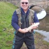

Gavin WrightWhiteboard Animator for Web Animate Having spent 25 years in the healthcare industry in both the UK and South Africa, I decided to have a dramatic career change. I dug out my old HGV license which I hadn't used in 25 years to give me a stable income. However, to add an income stream, I self taught whiteboard animation skills. I have a degree of web development skills which are also self taught. Therefore, to fill in the huge gaps in my skills I am currently re-training as a full stack web developer. |
| Dates | Company | Duties |
|---|---|---|
| 04/2019 - present | National Website Design | Helping my son set up and designing a web hosting business. This included the implementation and integration of WHMCS with his system. |
| 04/2019 - present | Web Animate | Designing and creating whiteboard animations and explainer videos. See examples below. |
| 05/2019 - Present | Gliderol Garage Doors | HGV driving throughout the UK and Ireland occaisional visit to the continent. |
| 12/2015 - 05/2019 | Various | HGV driving for agencies thorughout the UK and Ireland. |
| 01/2009 - 12/2015 | South African Moving & Handling Project | Assisting with the implementation of safer moving and handling systems of work in South Africa. I ran pilot programs in SA hospitals and was in direct communication with the ministry of health. I also designed, set up, and implemented training in hospitals, as well as designed a system of work for implenetation throughout the 400 state hospitals in South Africa. |
| 12/2008 - 12/2015 | Moving & Handling Instructors | Emergency Medical Technician. Consultancy work for NHS, private and charitable organisations regarding the safe moving and handling of elderly, infirm, injured or incapcitated people. I designed, hosted and maintained my own website. The associated newsletter became the most widely read newsletter of its type with subscribers from 25 countries. I also designed and hosted websites for others in my field. |
| 08/1996 - 12/2008 | TLC Ltd | Director & Emergency Medical Technician for TLC Ltd a company who specialised in the art of moving people safely. I designed CDs, DVDs, websites and e-learning material. |
| Whiteboard Animations | ⭐⭐⭐⭐⭐ | HTML | ⭐⭐⭐⭐⭐ | Plesk | ⭐⭐⭐⭐⭐ | WHMCS | ⭐⭐⭐ | php | ⭐ |
| Photoshop | ⭐⭐⭐⭐⭐ | Serif Products | ⭐⭐⭐⭐⭐ | VideoPad | ⭐⭐⭐⭐⭐ | CSS | ⭐⭐⭐⭐ | Java Script | ⭐⭐⭐ |
| Pat Alexander Director at Herts Handling Ltd |
Always innovative, full of surprises! - Gavin is a creative web designer, and has some truly intuitive ideas. He devises electronic marketing strategies that I had not even thought of, and is always pushing the boundaries. I would certainly recommend his work to anyone. | |
|  | Ken Cookson Moving & Handling Advisor Aintree Hospital |
Gavin is well respected in the field of manual handling as a provider of traditional and web based learning packages. |
| |
Andrea Bourdillon Moving & Handling Advisor Leeds City Council |
Gavin Wright is a renowned authority in the UK on moving and handling issues. He publishes an on line newsletter which informs and guides Moving and Handling Advisors throughout the UK. Gavin's knowledge is exemplary and he is an excellent lecturer on the principles of moving and handling. |
| Jacqueline Hall Senior Lecturer at Northumbria University |
I had the pleasure to give a presentation (or two) at Gavin's first Conference in Manual Handling. Gavin is an industrious person who is very enthusiastic about Manual Handling and is currently attending the Advanced Diploma in Patient Handling and Moving which I teach, to further his academic interest in this subject. I wish him well in his new work in South Africa. | |
| Victor Makgwana Director of the South African Moving & Handling Project |
Gavin is very dedicated to his work such that he never misses a day without any positive influence in it. He is passionate about his health care matters and always wants to see The South African Moving and Handling Project implemented in Mzanzi. Against all odds, ask him to do something, he will sacrifice his sleep to accomplish whatever task. I count myself very fortunate to associate with him cause we are determined and will see to the implementation of this project for the welfare of all South Africans. I will always appreciate and cherish the support his family gave him to let him come over to SA for few months when the late Deputy Health Minister Dr Sefularo was implementing in the project. I am sure with his wealth of experience and partnership with various health companies we'll achieve our goal and South Africa will join Britain, USA and other countries in the Safe Handling of Patients |